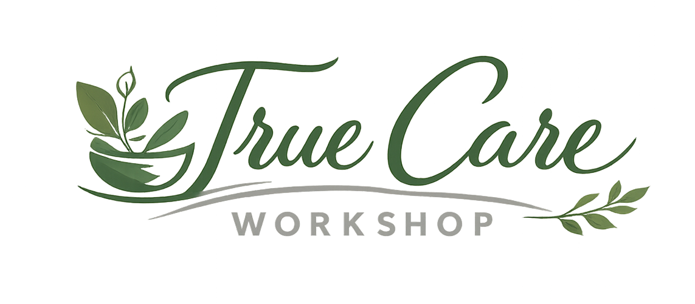

Press play and step into the story of True Care Workshop.
True Care Workshop is a free community workshop offering a hands-on experience with natural personal care products.
This workshop is designed to introduce participants to the world of clean, conscious formulation using safe, transparent ingredients.
You will learn how natural soap and shampoo are made, why ingredient choice matters, and how to build healthier daily routines through informed decisions.
Join Now